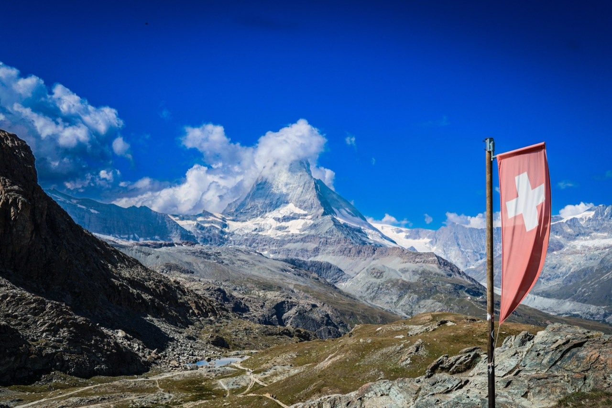
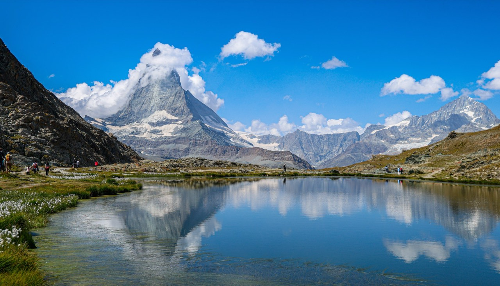
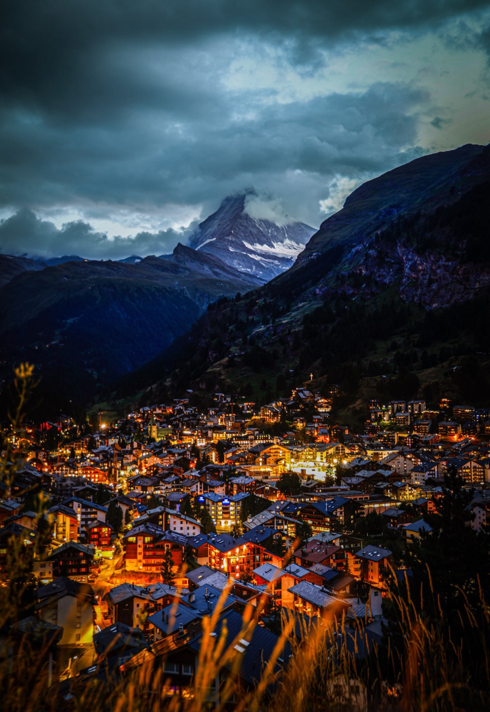

Switzerland
Alpine lakes and mountain rail lines.
2024 summer
Photographs



The guide for this country is not written yet.
Back to destinationsAlpine lakes and mountain rail lines.
2024 summer



The guide for this country is not written yet.
Back to destinations